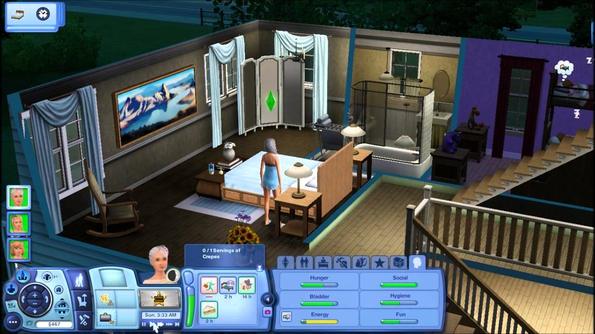

The Sims 3
The Sims 3 is a life simulation game that expands on its predecessors by offering a more open-ended experience. Released in 2009, it introduced several gameplay enhancements, including the ability for players to freely explore an entire neighborhood without loading screens. Players create and control Sims, guiding them through various life stages, including Baby, Toddler, Child, Teen, Young Adult, Adult, and Elder. Each stage presents unique interactions, needs, and activities.
Create-a-Sim

Create-A-Sim in The Sims 3 offers an intuitive and detailed interface for designing unique Sims. Players can customize facial features, body shapes, and clothing using a more fluid and flexible approach. The game introduced a color wheel for customizing clothing and furniture, allowing for greater personalization. Each Sim has personality traits that influence their behavior, interactions, and relationships, further enhancing gameplay depth. Players also select a lifetime wish for each Sim, shaping their goals and aspirations throughout the game.
DLCs

The Sims 3 features a variety of expansion packs and stuff packs that enhance gameplay with new content, activities, and features. Notable expansion packs include World Adventures (2009), which allows Sims to travel to different countries; Ambitions (2010), adding new careers and gameplay activities; and Late Night (2010), introducing nightlife features and social opportunities. Other expansions like Generations (2011) and Seasons (2012) added depth to family interactions and seasonal changes.